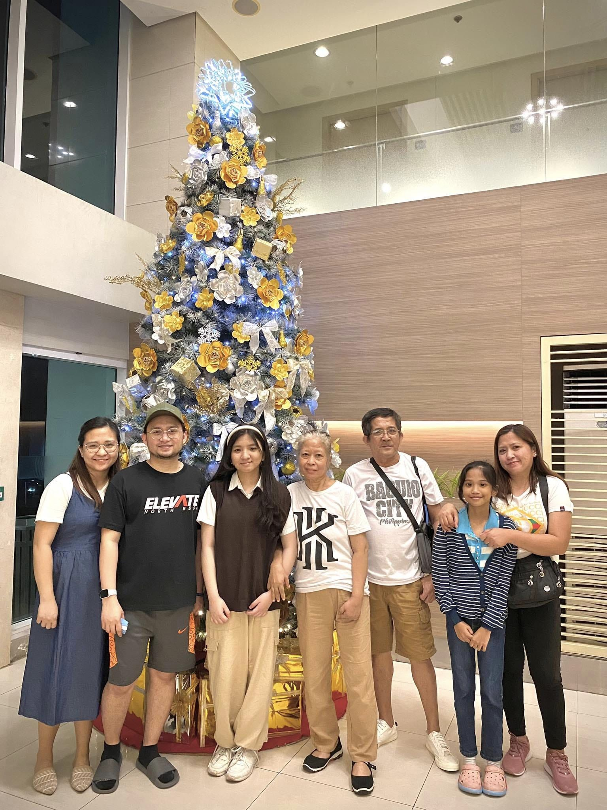

It's Okay to Make Mistakes
Edwin and May Anne with Mikhai (Grade 10) | Homeschooling Since 2023

Homeschooling in high school may be challenging for the Abilay Family, but their intentionality in guiding incoming 10th Grade Mikhai has helped her develop a more independent way of achieving goals.
The assessment of learning under BHS' full program is the Quarterly Bloom Review where the homeschooler presents highlights of lessons via performance tasks and creative projects. A Family Coach celebrates this milestone with the family by giving authentic feedback.
Here is what Mikhai thinks about Bloom Review appointments:
"The Bloom Review has transformed my perspective on learning. Before, my studies seemed boring, and I didn't have any motivation to study. That changed when I had the Bloom Review. I found my studies more exciting and engaging. One important lesson I've learned is that it's okay to make mistakes because that's where real learning happens."